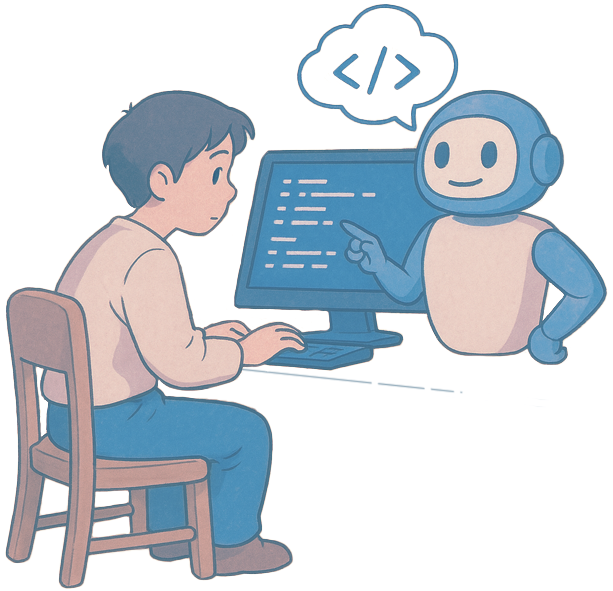

A classic NPC with a low social footprint, I would never join a club, nor volunteer.

A commitment to clarity, consistency, and adaptability, brings a thoughtful and agile mindset to mundane projects. Excellence comes from staying flexible, learning quickly, and embracing imperfection when it helps move things forward.
With a strong focus on emerging industry trends, I am particularly attuned to the importance of integrating on-premises infrastructure with public cloud platforms to support modern AI workflows. This kind of convergence helps accelerate AI adoption across the organisation.
Uniquely positioned to orchestrate AI tools across every stage of a digital project, I work closely with local teams of content professionals to not only realise creative ideas, but also add AI tooling to existing workflows allowing teams to spend much less time on preperation, concepts, tagging, and organisation and more time on making things.
From concept development and asset generation to post-production and delivery, I build intelligent workflows that enhance human creativity rather than replace it, ensuring that AI serves as a powerful multiplier for an organisations existing artistic talent.
A commitment to clarity, consistency, and adaptability brings a thoughtful, agile mindset to even the most routine projects. Excellence stems from staying flexible, learning quickly, and embracing imperfection when it drives progress.
With a strong focus on emerging industry trends, I understand the importance of integrating on-premises infrastructure with public cloud platforms to support modern AI workflows. This convergence accelerates AI adoption across the organisation.
Uniquely positioned to orchestrate AI tools across every stage of a digital project, I collaborate closely with local content teams to bring creative ideas to life. By embedding AI into existing workflows, teams spend less time on preparation, concepting, tagging, and organisation—and more time creating.
From concept development and asset generation to post-production and delivery, I build intelligent workflows that enhance human creativity rather than replace it, ensuring AI serves as a powerful multiplier for an organization's artistic talent.
Current project: Developing AI-driven applications with domain-specific analysis tailored to game development, particularly focused on slot machine mechanics and advanced gambling algorithms. These models are designed to perform deep pattern recognition, probabilistic modeling, and behavioral analysis of game logic, payout structures, and player interaction data. The solution integrates with simulation environments and reinforcement learning frameworks to evaluate and optimize game dynamics, player engagement, and monetization strategies.
Loves: Yorkshire tea, sports mixtures, science fiction, crisp grid lines, schematics, rulebooks and schematics, AI.
Dislikes: Over ripe bananas, pips, purple, the noise of people eating
Favourite animal: Sloth